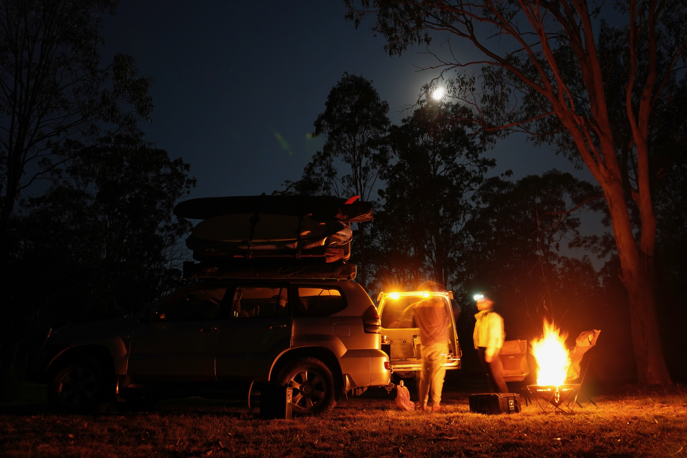

Camping recipes for 3 days - Option 1

Description
A selection of recipes for 3 days of camping in the woods. These recipes are designed to be simple, quick, use similar ingredients and only require limited equipment.
Breakfast
- Bacon & egg roll
- Pancakes
- Fruits & cereals
Lunch
- Vegetarian sandwich
- Greek salad
- Chicken caesar wrap
Dinner
- Gnocchi with pesto
- Haloumi burgers
- Fajitas with chicken
Ingredients
- Bread
- 8x wraps
- 4x burger buns
- Gnocchi
- 1x tomato
- 250g cherry tomatoes
- 1x Lebanese cucumber
- Fruits
- 2x red onions
- 3x bags of leaves
- 2x capsicum
- 1x avocado
- 1x lime
- Spinach
- 2 chicken breasts
- 2 eggs
- 8 slices of bacon
- Pesto
- Humus
- Barbecue sauce
- Caesar sauce
- Jar of roast vegetables
- Sundried tomatoes
- Parmesan
- 200g feta
- Haloumi
- Pancake mix
Breakfasts
Breakfast 1 - Bacon & egg roll
- Toast the burger buns on the pan. When ready add the barbecue sauce and set aside.
- Cook the bacon on the pan and add to the bread.
- Cook the egg on the pan abd add to the bread.
Breakfast 2 - Pancakes
- Add water to the pancake mix following the instructions. Shake.
- Place the pan on the stove to warm up.
- When the pan is hot, start cooking the pancakes.
- Dice fruits to add to the pancakes.
Breakfast 3 - Fruits & cereals
- Dice fruits and add to the cereals.
- Add milk or yoghurt.